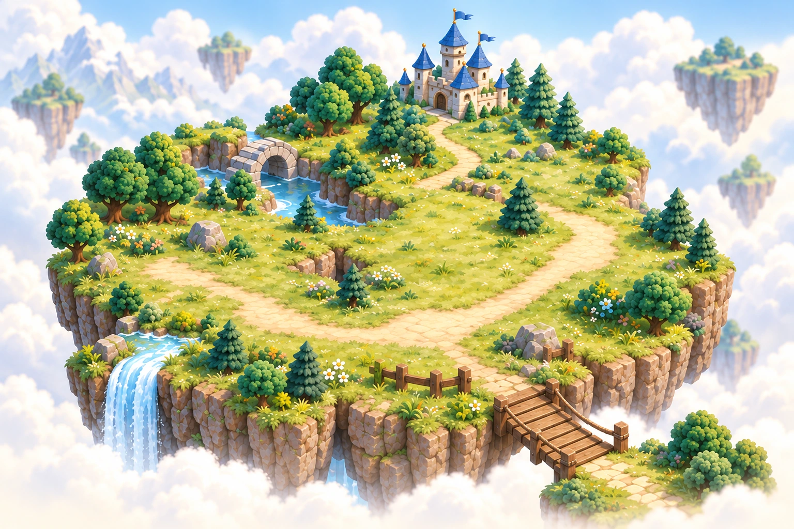
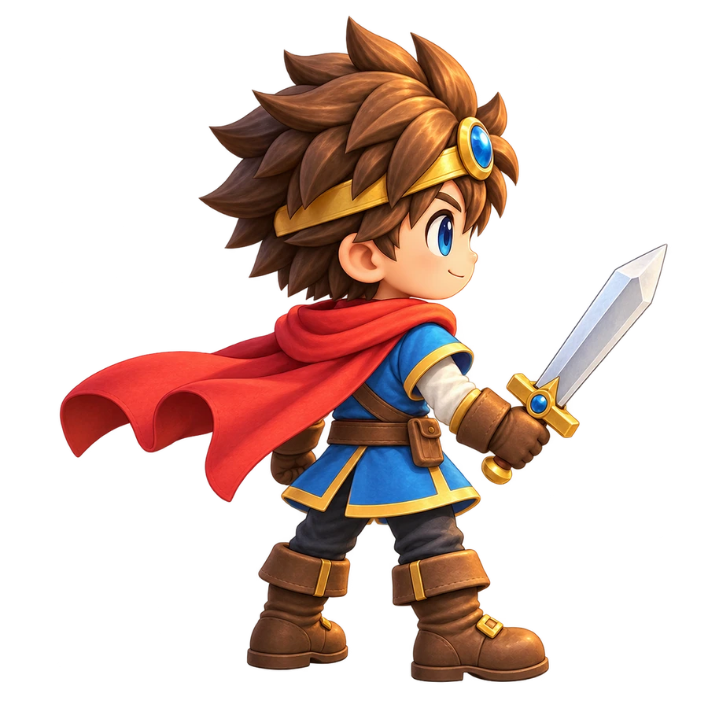
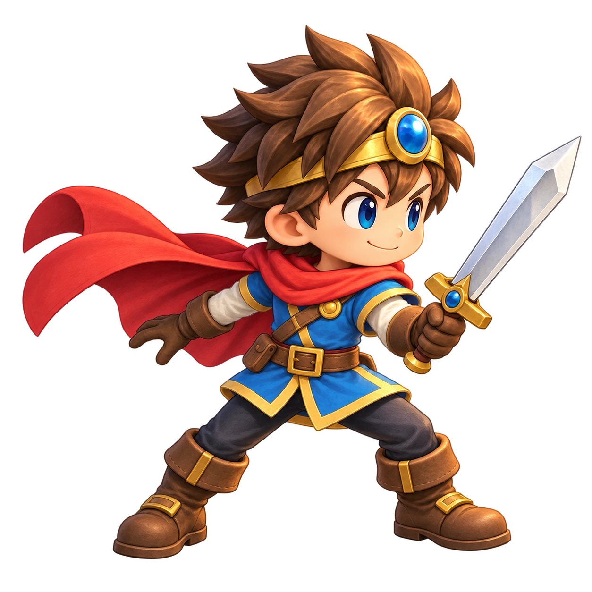
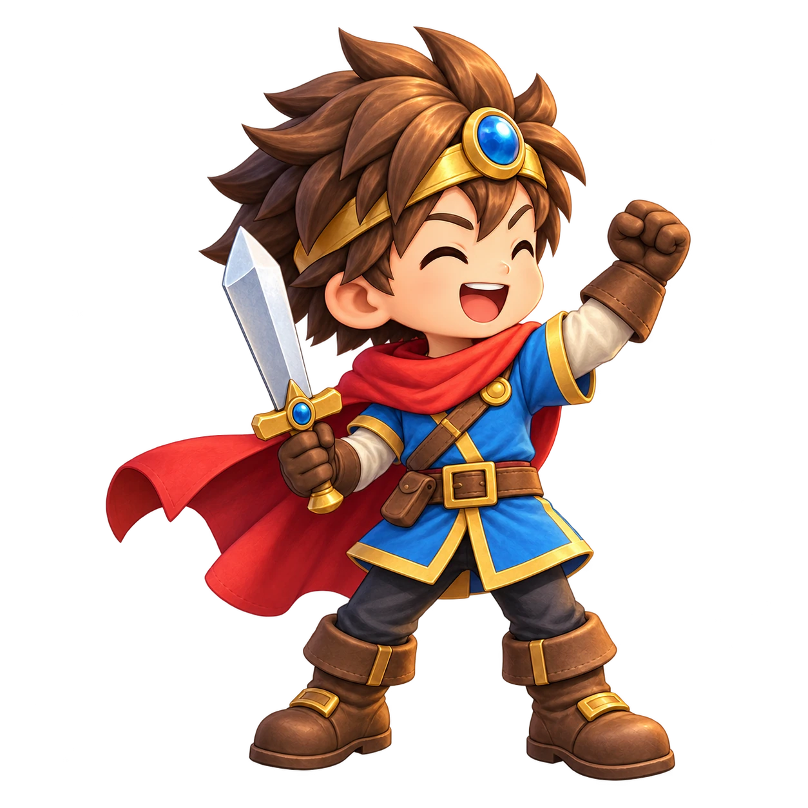
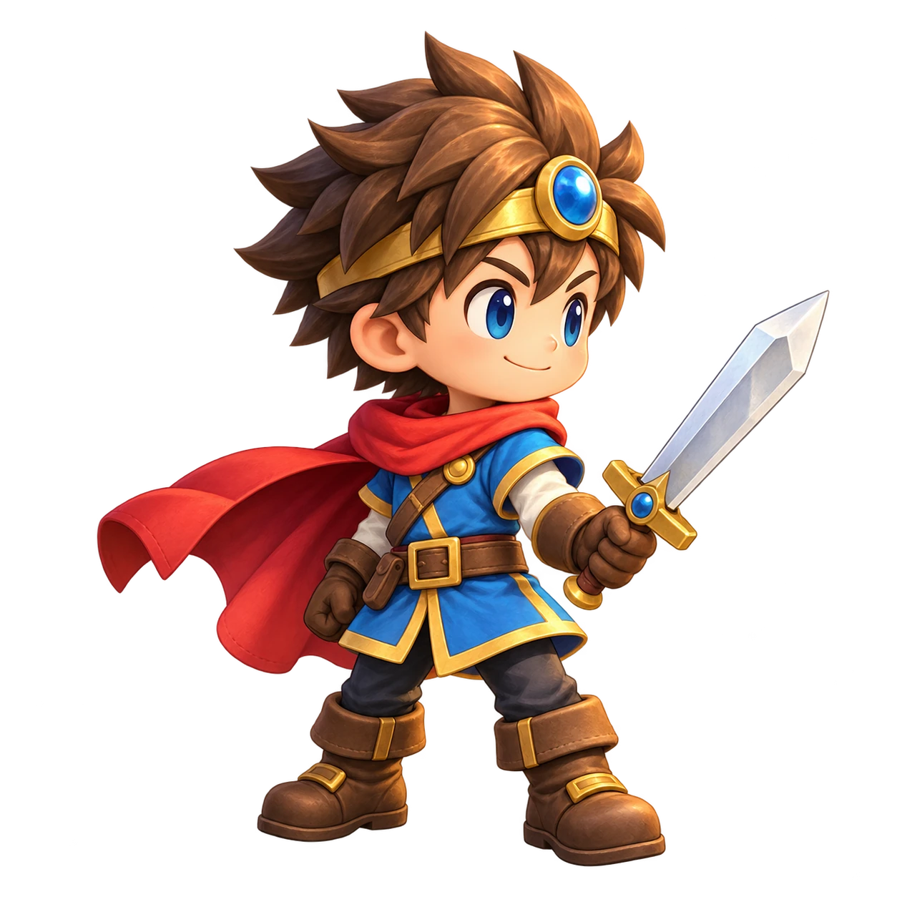

100問計算RPG
Lv. 1
0 / 300 EXP

1
2
3

今日の100問
20問のトレーニング
今日の100問

残り 問
入力中の答え
ひと休み中
続きから再開できます。
冒険の記録

答えの確認
そうび

冒険者の記録
- 冒険日数
- 総計算数
- 連続ボーナス
図鑑
図鑑
過去の記録
遊び方
毎日の100問
- 足し算50問＋引き算50問。
- 最後まで解くとEXPを獲得します。
- 途中では正解・不正解を表示しません。結果で確認し、間違えた問題を復習できます。
- 連続して取り組むとボーナスEXP。復習ではEXPやボスへの進行は増えません。
ボスと装備
- 通常100問を3回クリアするとボスが出現。
- ボス戦は20問。すべて一発正解で撃破です。
- 撃破すると100 EXPと、現在ランクの防具をランダムに1個獲得。重複することもあります。
- 頭・胴・脚・足を揃えると次のランクへ。剣はランク解放時に自動で装備します。
- 革 → 石 → 鉄 → ダイヤ → ネザライト。
3秒暗記
- 1問3秒、1回20問、4つの答えから選びます。
- 20問を終えると、正解した出題1問につき1 EXP。
- 間違い・時間切れは正しい対応を2秒表示します。
- 異なる3回の完了した挑戦で正解すると「覚えた」の目安になります。間違えたら練習中に戻ります。
- 覚えるカードは時間制限なし。見るだけではEXPは増えません。
記録と保存
- 記録はこの端末・ブラウザに保存します。
- 通常計算は最後まで解くと記録されます。
- 暗記の練習記録は途中でやめても残りますが、EXPは完了時だけです。
- 別のアプリに移動したときや横向きにしたときは一時停止。縦に戻して「再開する」で続けます。
休んでもレベルや装備は失いません。
設定
このアプリについて
100問計算RPG
この端末に記録を保存します。
縦画面で遊べます